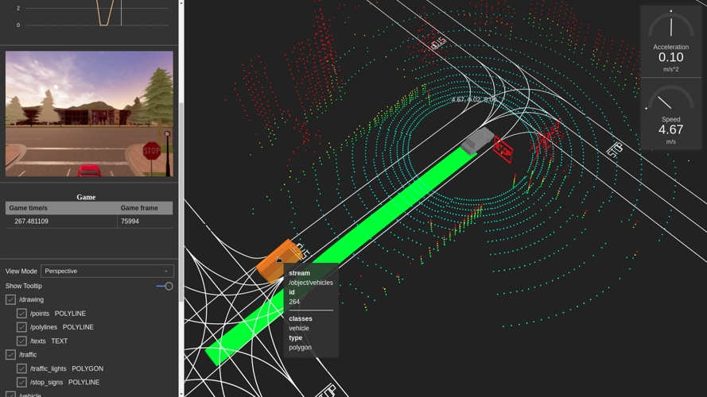

carlaviz¶
carlaviz 插件用于在网络浏览器中可视化模拟。创建了一个具有场景的一些基本表示的窗口。参与者可以即时更新，可以检索传感器数据，还可以在场景中绘制附加文本、线条和折线。
一般信息 ¶
支持 ¶
- Linux — Carla 0.9.6, 0.9.7, 0.9.8, 0.9.9, 0.9.10.
- Windows — Carla 0.9.9, 0.9.10, 0.9.15.
- 从源代码构建 — 最新更新。
获取 carlaviz ¶
先决条件 ¶
- Docker — 访问文档并 安装 Docker.
- 操作系统 — 任何能够运行 Carla 的操作系统都应该可以工作。
- Websocket-client —
pip3 install websocket_client。如果系统中尚未安装 pip 。
下载插件 ¶
打开终端并根据要运行的 Carla 版本拉取 carlaviz 的 Docker 映像。
# 仅拉取和所使用的Carla包匹配的镜像。
# docker pull mjxu96/carlaviz:0.9.6
# docker pull mjxu96/carlaviz:0.9.7
# docker pull mjxu96/carlaviz:0.9.8
# docker pull mjxu96/carlaviz:0.9.9
# docker pull mjxu96/carlaviz:0.9.10
# 如果工作在从源代码构建的 Carla 上，则拉取该镜像
# docker pull mjxu96/carlaviz:latest
docker pull mjxu96/carlaviz:0.9.15
!!! 重要 目前在 Windows 中仅支持 0.9.9 和 0.9.10。
Carla 至 0.9.9（包含）设置为单流。对于更高版本，实现了传感器的多流。
-
在单流中, 一个传感器只能被一个客户端听到。当另一个客户端已经听到传感器时，例如在运行
manual_control.py时，carlaviz 被迫复制传感器以检索数据，并且性能可能会受到影响。 -
在多流中，多个客户端可以听到一个传感器。carlaviz 不需要重复这些，并且性能不会受到影响。
!!! 笔记 或者，在 Linux 上，用户可以按照 此处 的说明构建 carlaviz ，但使用 Docker 映像将使事情变得更加容易。
运行 carlaviz ¶
1. 运行 Carla。
-
a) 在 Carla 包中 — 转至 Carla 文件夹并使用
CarlaUE4.exe(Windows) 或./CarlaUE4.sh(Linux) 启动模拟。 -
b) 在从源代码构建的包中 — 转到 Carla 文件夹，使用
make launch运行虚幻编辑器，并按Play。 -
c) 运行示例脚本 - carlaviz_exmaple 。
2. 运行 carlaviz. 根据已下载的 Docker 镜像，在另一个终端中运行以下命令。
更改先前下载的镜像的名称 <name_of_Docker_image>，例如 mjxu96/carlaviz:latest 或 mjxu96/carlaviz:0.9.15。
# 在 Linux 系统
docker run -it --network="host" -e CARLAVIZ_HOST_IP=localhost -e CARLA_SERVER_IP=localhost -e CARLA_SERVER_PORT=2000 <name_of_Docker_image>
# 在 Windows/MacOS 系统
# docker run -it -e CARLAVIZ_HOST_IP=localhost -e CARLA_SERVER_IP=host.docker.internal -e CARLA_SERVER_PORT=2000 -p 8080-8081:8080-8081 -p 8089:8089 <name_of_Docker_image>
docker run -it -p 8080-8081:8080-8081 mjxu96/carlaviz:0.9.15 --simulator_host host.docker.internal --simulator_port 2000
如果一切都已正确设置，carlaviz 将显示类似于以下内容的成功消息。

!!! 警告 请记住编辑前面的命令以匹配正在使用的 Docker 映像。
3. 从本地打开 打开 Web 浏览器并转到 http://127.0.0.1:8080/ 。carlaviz 默认在 8080 端口运行。输出应类似于以下内容。

工具 ¶
一旦插件运行，它就可以用于可视化模拟、其中的参与者以及传感器检索的数据。该插件在右侧显示一个可视化窗口，场景实时更新，左侧显示一个侧边栏，其中包含要显示的项目列表。其中一些项目将出现在可视化窗口中，其他项目（主要是传感器和游戏数据）出现在项目列表上方。 以下是可用于可视化的选项列表。可能会显示其他元素，例如
-
View Mode — 更改可视化窗口中的视角。
Top Down— 空中视角。Perspective— 自由的视角。Driver— 第一人称视角。
-
/vehicle — 显示自主车辆的属性。可视化窗口中包括速度计和加速度计，以及 IMU、全球导航卫星系统传感器和碰撞检测传感器检索的数据。
/velocity— 自主车辆的速度。/acceleration— 自主车辆的加速。
- /drawing — 在使用 CarlaPainter 绘制的可视化窗口中显示其他元素。
/texts— 文本元素。/points— 点元素。/polylines— 折线元素。
- /objects — 在可视化窗口中显示参与者。
/walkers— 更新行人。/vehicles— 更新车辆。
- /game — 显示游戏数据。
/time— 当前模拟时间和帧。
- /lidar — LIDAR 传感器数据。
/points— LIDAR 传感器检测到的点云。
- /radar — LIDAR 传感器数据。
/points— 雷达传感器检测到的点云。
- /traffic — 地标数据。
/traffic_light— 在可视化窗口中显示地图的交通灯。/stop_sign— 在可视化窗口中显示地图的停车标志。
尝试生成一些参与者。这些将在可视化窗口中自动更新。
cd PythonAPI/examples
# 在同步模式模拟下生成参与者
python3 generate_traffic.py -n 10 -w 5

生成一个手动控制的自主车辆并四处移动，以查看插件如何更新传感器数据。
cd PythonAPI/examples
python3 manual_control.py

贡献者 ( wx9698 ) 创建了一个附加类 CarlaPainter ，它允许用户绘制要在可视化窗口中显示的元素。其中包括文本、点和折线。按照 此示例 生成带有 LIDAR 的自我车辆，并绘制 LIDAR 数据、车辆的轨迹和速度。

像素流¶
参考 链接 中的说明和代码进行像素流推送的部署，如果出现启动成功：
12:06:52.980 WebSocket 1istening to Streamer comnections on :8888
12:06:52.982 WebSocket listening to Players comnections on :80
12:06:52.980 Http 1istening on *: 80
代理），把这个使用代理服务器点掉。
这就是关于 carlaviz 插件的全部信息。如果有任何疑问，请随时在论坛中发布。